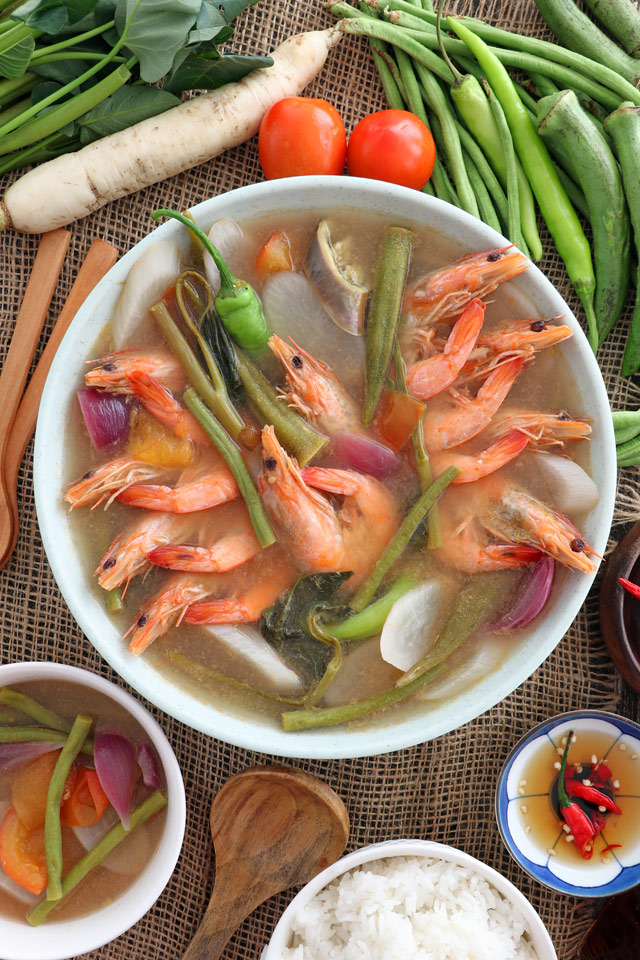

Sinigang na Hipon

Description
Sinigang na Hipon is a Filipino main dish having shrimp as the main
ingredient. Fresh Shrimps and vegetables are cooked by boiling in a sour
broth. The commonly used souring agent is tamarind. However, other fruits
such as guava, tomato, bilimbi (known as kamias), green mango, pineapple,
and wild mangosteen (santol) can also be used.
Similar to the previous sinigang dishes that we featured (Sinigang na ulo
ng Salmon and Pork Sinigang), This variation is eaten with rice and some
fish sauce (patis) on the side. I usually cook this dish whenever I feel
nostalgic or when the weather is pretty cold. Like today, the temperature
is dropping again somewhat signaling for the coming of winter.
Ingredients
- 1 lb. shrimp cleaned
- 44 grams Knorr Sinigang sa Sampaloc Mix
- 1 bunch kangkong
- 15 pieces snake beans
- 5 pieces okra
- 1 piece eggplant
- 1 cup daikon radish sliced
- 1 piece tomato sliced
- 3 pieces long green pepper
- 1 piece onion
- 2 quarts water
- Fish sauce and ground black pepper to taste
Steps
-
Boil water in a cooking pot. Add onion, tomato, and radish. Cover and
continue to boil for 8 minutes.
- Add shrimp. Cook for 1 minute.
-
Add Knorr Sinigang sa Sampaloc Recipe Mix. Stir until it dilutes
completely. Cover and cook for 3 minutes.
-
Add long green pepper, snake beans, okra, and eggplant. Stir. Cook for 5
minutes.
-
Put the kangkong stalks into the pot. Season with fish salt and ground
black pepper.
- Add kangkong leaves. Cook for 1 minute.
- Transfer to a serving bowl. Serve warm with rice.